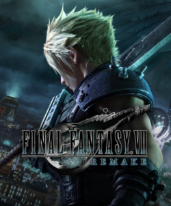

Final Fantasy VII Remake é um jogo eletrônico de RPG de ação desenvolvido e
publicado pela Square Enix. É um título da série Final Fantasy e uma recriação
de Final Fantasy VII, tendo sido lançado para PlayStation 4 em 10 de abril de
2020. A história se passa na metrópole de Midgar e acompanha o mercenário Cloud
Strife, que se junta a um grupo ecoterrorista em uma tentativa de impedir que a
poderosa megacorporação Shinra use a essência vital do planeta como fonte de energia.
A jogabilidade combina combate em tempo real com elementos de estratégia.
VII Remake foi anunciado em 2015 após anos de especulações, contando com
o retorno de vários membros da equipe de produção original. Um dos objetivos gerais do
projeto foi criar um equilíbrio entre o antigo e o novo, com os desenvolvedores precisando
escolher quais elementos de VII manter e quais alterar. A narrativa foi expandida e modificada
em relação a original, com os roteiristas procurando criar interações mais naturais entre
os personagens. O desenho dos protagonistas precisou manter um equilíbrio de realismo e
estilização. A trilha sonora contém rearranjos de faixas do jogo original
e novas composições.
O jogo foi muito bem recebido pela crítica especializada ao ser lançado.
VII Remake foi elogiado por suas gráficos, jogabilidade, narrativa e música, com os críticos
destacando o quão fiel era ao título original ao mesmo tempo que expandia sua mitologia.
O sistema de combate também recebeu elogios por seus elementos estratégicos e floreios
visuais. Entretanto, o jogo mesmo assim recebeu críticas por sua linearidade
e natureza repetitiva de missões secundárias. VII Remake foi um sucesso comercial
e se tornou um dos títulos mais vendidos do PlayStation 4, além de ter vencido e
sido indicado a diversos prêmios da indústria.